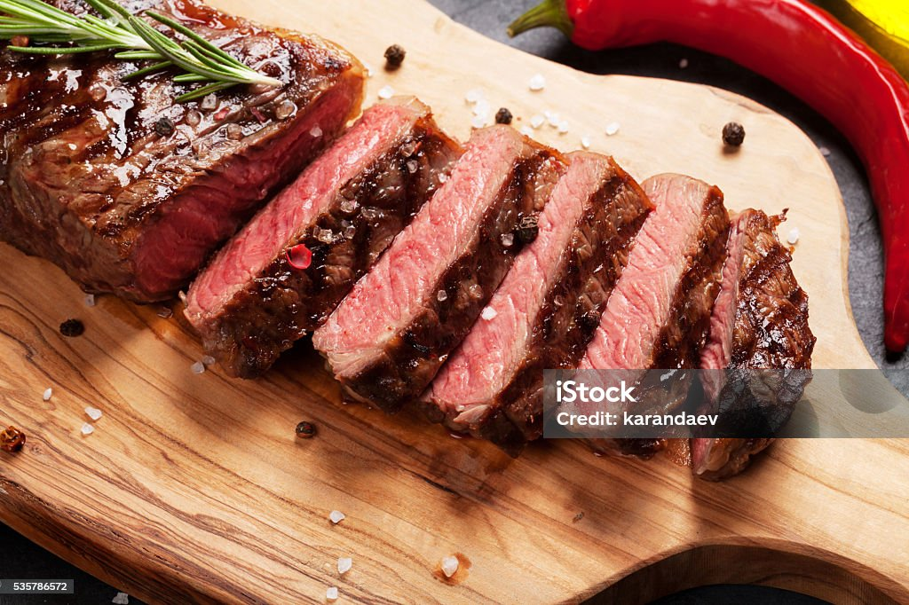

Steak

Description
A great flank steak marinade like this one is important if you want a tender, juicy, flavorful steak. Make sure you marinate your flank steak for at least 2 hours for best results or longer if you have time. This wonderful quick and easy recipe also works great when the steak is sliced and used for fajitas.
Make the best steak of your life with this top-rated recipe. A complex, savory flank steak marinade ensures perfectly tender and juicy beef every time.
Ingredients
- Flat Iron Steak
- Salt
- Black Pepper
- Garlic Powder
Steps
- Gather all ingredients.
- Whisk together oil, soy sauce, vinegar, lemon juice, Worcestershire sauce, Dijon mustard, garlic, and pepper for marinade until thoroughly combined. Place steak in a 9x13-inch glass baking dish.
- Pour marinade over flank steak in the baking dish; turn several times to coat thoroughly with marinade. Cover, and refrigerate for 2 to 6 hours, or up to 12 hours if you have time.
- When ready to cook, preheat an outdoor grill for medium-high heat and lightly oil the grate.
- Remove steak from the marinade and shake off excess. Discard the remaining marinade.
- Cook steak on the preheated grill for about 5 minutes per side, or to desired doneness.
- Remove from the grill and let rest for 5 minutes before slicing and serving.
- Serve hot and enjoy!
Back